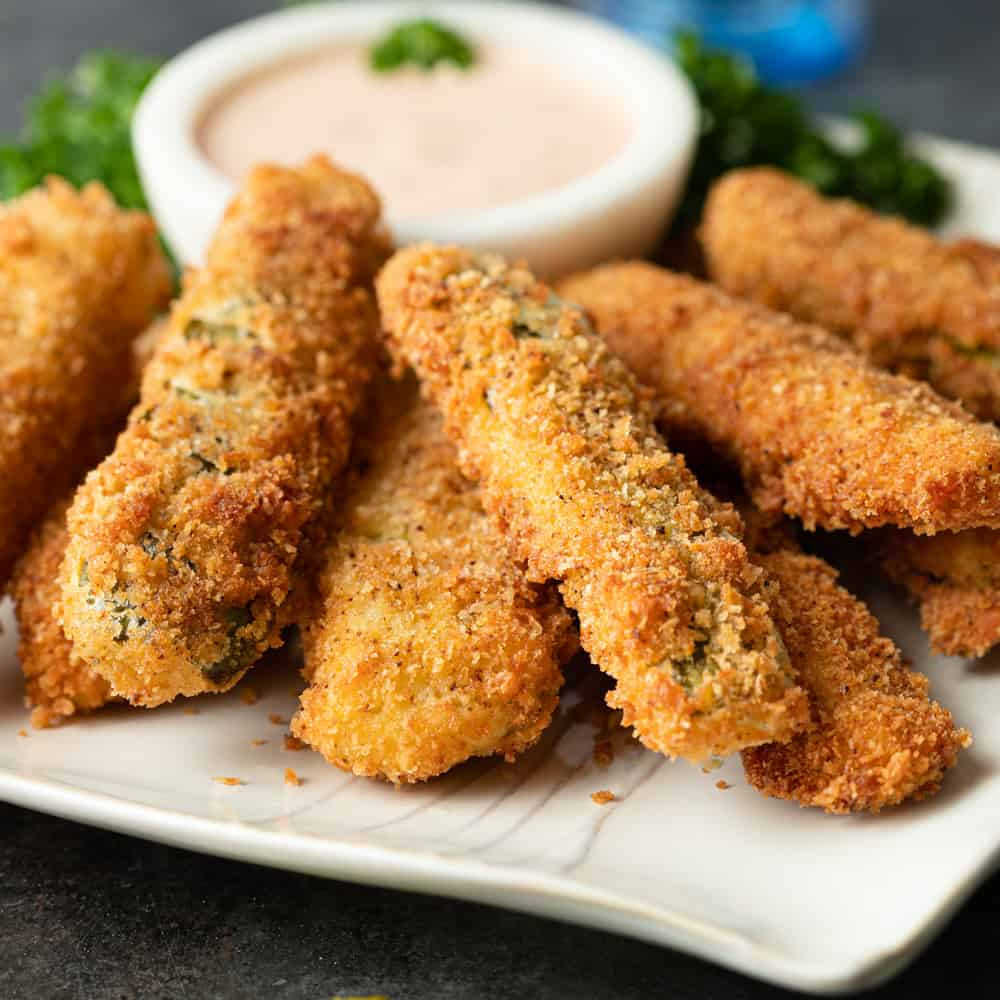

Deep Fried Pickles

Crispy Deep Fried Pickle Spears
Get ready to crunch into perfection with these deep-fried pickle spears! Tangy, juicy pickles are coated in a seasoned batter and fried to golden-brown, crispy excellence. Each bite delivers a satisfying combination of zesty pickle goodness and a light, crispy shell, perfect for dipping into your favorite sauces like ranch, spicy aioli, or honey mustard. Whether you’re hosting a game night, attending a potluck, or simply craving a unique snack, these deep-fried pickle spears are sure to be a hit. Serve them hot for the ultimate appetizer or indulgent treat!
Ingredients
- 8-10 pickle spears (dill pickles work best, drained and patted dry)
- 1 cup all-purpose flour
- 1 tsp garlic powder
- 1 tsp onion powder
- 1 tsp smoked paprika
- 1/2 tsp cayenne pepper (optional, for a kick)
- 1 tsp salt
- 1/2 tsp black pepper
- 2 large eggs
- 1/2 cup milk
- 1 1/2 cups breadcrumbs (panko or regular)
- Vegetable oil (for frying)
Deep Fried Pickle Spears Recipe
Prep Time:15 minutes
Cook Time:10 minutes
Serves:4
Step 1: Prepare the Pickles
- Drain the pickle spears and pat them dry with paper towels to remove excess moisture. This helps the batter stick better.
Step 2: Set Up a Breading Station
- Bowl 1 (Flour Mixture): Combine the flour, garlic powder, onion powder, smoked paprika, cayenne pepper (if using), salt, and black pepper. Mix well.
- Bowl 2 (Egg Wash): Whisk together the eggs and milk until smooth.
- Bowl 3 (Breadcrumbs): Place breadcrumbs in a seperate bowl.
Step 3: Bread the Pickles
- Take a pickle spear and coat it thoroughly in the flour mixture, shaking off any excess.
- Dip it into the egg wash, ensuring it’s fully coated.
- Roll the pickle in the breadcrumbs, pressing gently to adhere.
- Place the breaded pickle on a plate and repeat with the remaining spears.
Step 4: Heat the Oil
- Pour vegetable oil into a deep skillet or heavy-bottomed pot to a depth of about 2 inches.
- Heat the oil to 350°F (175°C). Use a kitchen thermometer to maintain the temperature.
Step 5: Fry the Picles
- Carefully place a few breaded pickle spears into the hot oil, ensuring not to overcrowd the pot.
- Fry for 2-3 minutes, turning occasionally, until golden brown and crispy.
- Remove the pickles with a slotted spoon and place them on a paper towel-lined plate to drain excess oil.
- Repeat with the remaining spears.
Step 6: Serve and Enjoy
- Arrange the crispy pickle spears on a serving platter.
- Serve hot with your favorite dipping sauce like ranch dressing, spicy aioli, or honey mustard.
These deep-fried pickle spears are best enjoyed fresh and hot!
Return Home